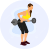
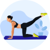
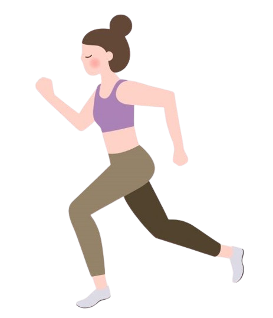

Workout Tracker
You've burned fewer calories than yesterday. Time to get moving!
Upcoming Workout
see more

Full Body Workout
Today 3pm

Upper Body Workout
4 Feb, 3:30 pm
Full Body Workout
Arms
Chest
